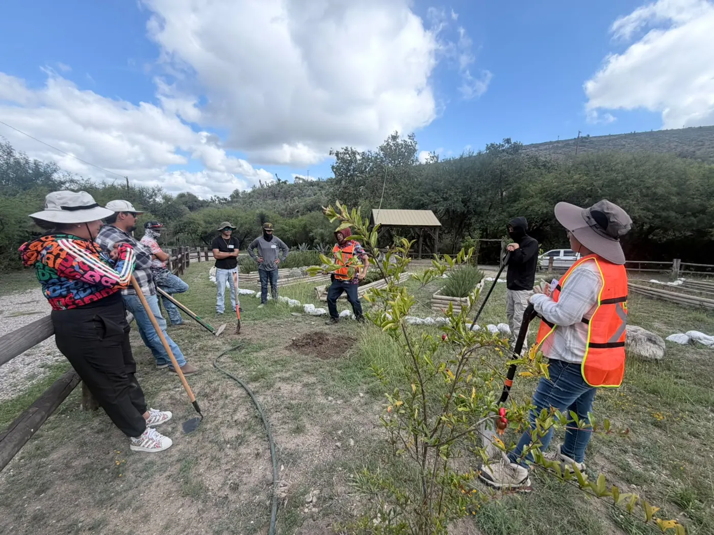

Licencia social · Territorio · Cumplimiento
Para gobiernos, empresas e industria
La confianza no se tramita. Se construye.
Acompañamos a su proyecto en los dos frentes que lo sostienen: los acuerdos con el territorio y el expediente técnico que exige la ley.

Cumplir
Con la normativa ambiental, social y de sostenibilidad.
Competir
Menos costos y riesgos: ahorro de energía, reúso de agua.
Crecer
Acceso a mercados estratégicos y financiamiento.
Licencia social y estrategia
- Mapeo de actores y relacionamiento comunitario
- Mesas de diálogo, consulta previa y mediación
- Estrategia de sostenibilidad y criterios ESG
- Comunicación estratégica y RSE
- Indicadores y reporte ESG / ODS
Expediente técnico y legal
- Manifestación de Impacto Ambiental (MIA)
- Manifestación de Impacto Social del Sector Energético (MISSE)
- Estudios técnicos y de riesgo
- Cumplimiento de condicionantes y seguimiento
Con especialistas certificados aliados.
Estrategia de sostenibilidadLicencia socialGestión de responsabilidad social empresarialReportes ESGRuta de la BiodiversidadRuta de EcotecniasGestión de certificación Wildlife Habitat CouncilVoluntariados con causa
Entre otros proyectos a la medida de cada organización.